记录｜使用 ESXi 软路由构建舒适的宿舍网络环境
学校虽有提供现成的校园网和宽带服务，但我这么一个折腾狂魔，免不了要对网络环境进行一番改造，遂斥巨资购入了一台搭载 ESXi 系统的工控机来作为软路由使用
关于校园网 & 校园宽带
校园网（HNU WiFi）和校园宽带都是需要登录认证才能使用的。曾在去年，老湖就因为校园网的收费政策引起过一波讨论。流量计费确实可以理解，校方这边也还是很乐意听取学生的意见的，很快便指定了新的计费政策，最近似乎也在筹划着更换新的 AP，最最重要的是，它支持网页认证！不过嘛，缺点也还是有的，或许也算不上缺点，几万人在用的大内网，开个 AP 隔离确实更安全，但这样于我个人而言，就不太方便各个设备之间互联互通了
再来看校园宽带这边，虽然不存在 AP 隔离，但每次都得绕一圈从它的网关回来也不像话，同时宽带更是限制多多，每个平台都必须使用专门的客户端才能登录，这让我大 Ubuntu 用户情何以堪？更有甚者，每个平台最多只能有一台设备在线，这是默认我只能有一部手机？
如此种种，我们自然是不能给它惯着，说了这么多，来看看我是如何整顿宿舍网络环境的吧！
通过 ICS 绕过共享限制

这台工控机一共有 4 个网口，分别对应着 4 张物理网卡，现在通过拔插网线的方式，来确定一下网卡和接口的对应关系：
| 网卡名称 | 物理接口 |
|---|---|
| vmnic0 | L3/W2 |
| vmnic1 | LAN1 |
| vmnic2 | L2/W3 |
| vmnic3 | WAN1 |
「天翼校园」虽然会检测 Windows 自带的 WiFi Direct 热点共享，但对 ICS 网络共享似乎并不能察觉。我这边准备了一台 Win7 的虚拟机用于拨号和 ICS 网络共享，一共分配 4GB RAM 和 24GB 存储，还算是绰绰有余：
然后分别将 Outbound 和 WAN 网络添加到虚拟机上，Outbound 用于向外部拨号连接，WAN 绑定了 L2/W3 物理接口，插在无线路由器的 WAN 口。其实这里如果能把 vmnic3 PCI 直通到 Windows 拨号机会获得更好的性能，估计校园宽带这点孱弱的网速也跑不满，想想还是算了，装驱动怪麻烦的……
然后拨号机这边也是把需要的文件提前准备好，主要是「天翼校园」认证客户端、用于自动拨号的 Python 和 KMS 激活工具；接下来再对 Windows 做一些简单的设置，在「运行」窗口中输入 UserAccountControlSettings 回车，将通知级别修改为「从不通知」
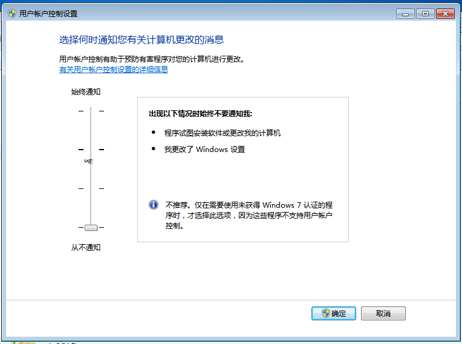
这一步是设置系统默认允许所有管理员权限请求，以避免自动化过程中有进程提权导致弹出的 UAC 影响脚本正常功能，强烈不建议在日常工作的电脑上这么干，非常危险！

激活 Windows 之后，安装好宽带客户端，发现经常弹出这个「自助排障工具」，非常烦人，简单给它处理一下：将原来的可执行文件加上后缀 .bak，然后创建一个同名只读文件即可
编译 OpenWrt & 配置旁路由
拨号成功后先挂着不管，来到 这个仓库，按教程配置好后开始编译，大约等待 1-2 个小时，就可以在 Actions 页面找到编译好的 zip 文件啦～
打开压缩包，乍一看好像乱七八糟的东西不少，不过不要惊慌，只需要把这个 vmdk 文件拿出来就可以了：
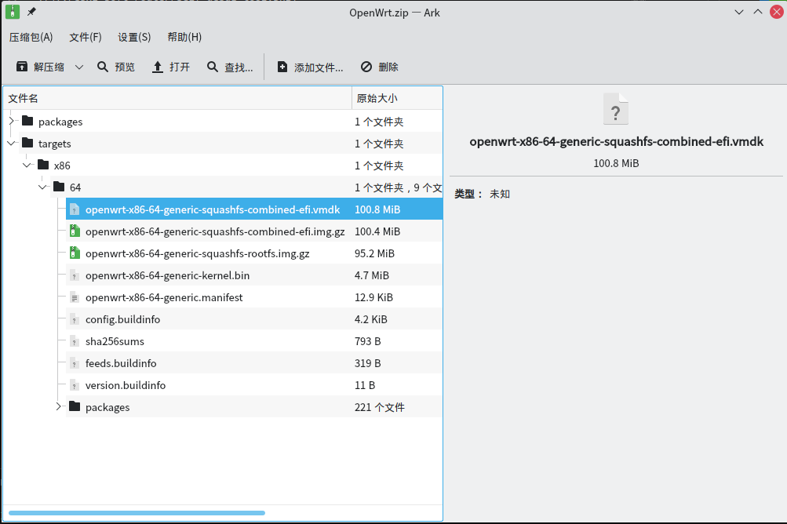
将 vmdk 上传到 ESXi，但这个 vmdk 是专为 VMWare Player、VMWare Fushion 或者 VMware Workstation 准备的，在 ESXi 上并不能直接使用，所以我们需要先把它转换成 ESXi 的格式。首先登录到 ESXi 网页控制台，在 主机->管理->服务 中启用 TSM-SSH：
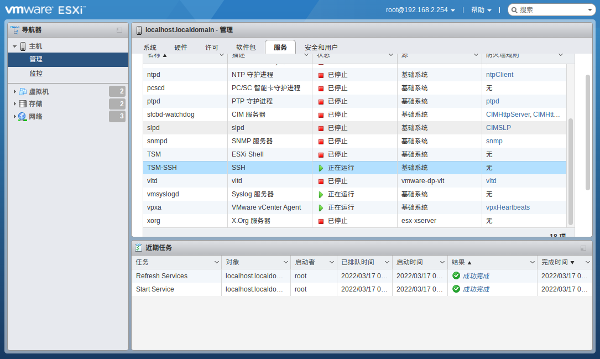
通过 ssh 连接到 ESXi，然后找到刚刚上传的 vmdk 文件
1 | cd /vmfs/volumes |
然后进行转换：
1 | vmkfstools -i openwrt-x86-64-generic-squashfs-combined-efi.vmdk openwrt-esxi.vmdk |
准备工作已经完成，现在创建新的虚拟机，创建时系统版本选择 Linux、其它 64 位：
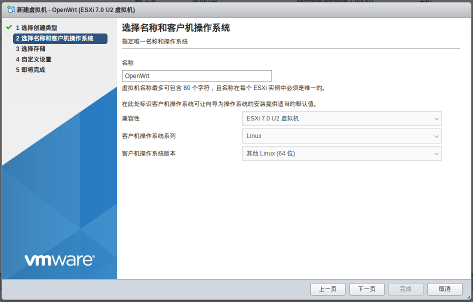
然后将默认的硬盘删除，在左上角添加刚刚转换好的虚拟硬盘文件：
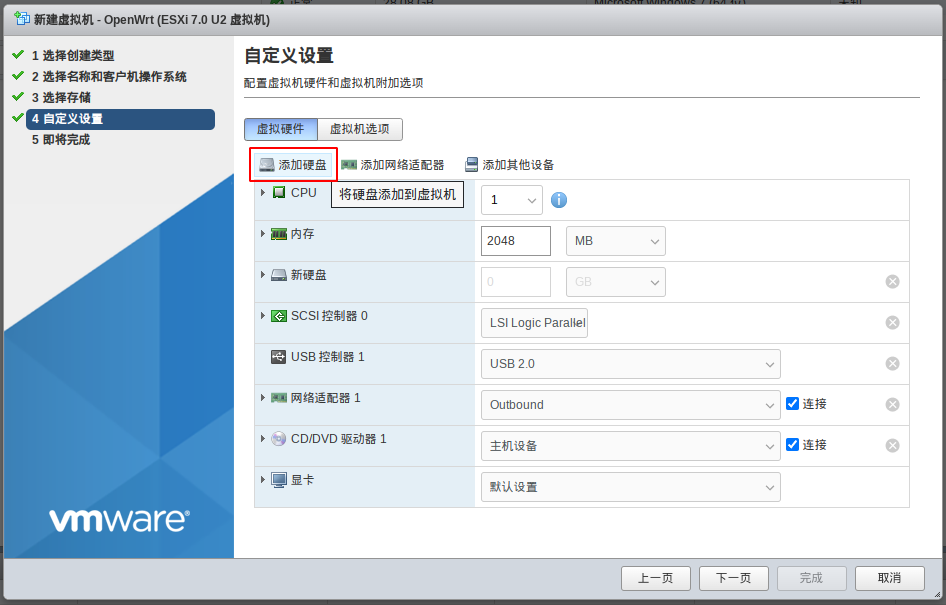
网络适配器选择 VM Network，继续完成创建，然后打开虚拟机电源，等待控制台不再刷新之后，按回车即可进入系统
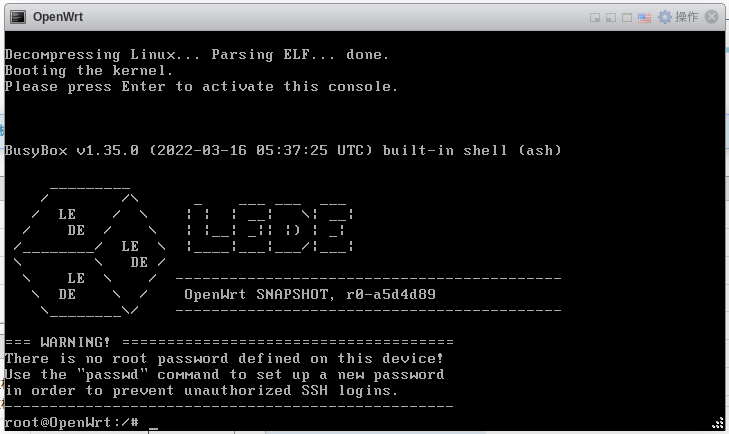
使用之前，我们还需要再做几步配置，现在 OpenWrt 的 web 控制台大概率是无法访问的状态，我们需要更新它的 ip 地址，执行 vim /etc/config/network 编辑配置文件，找到 lan 配置 下的 ipaddr 选项，将其更改为一个可以访问的 ip 地址：
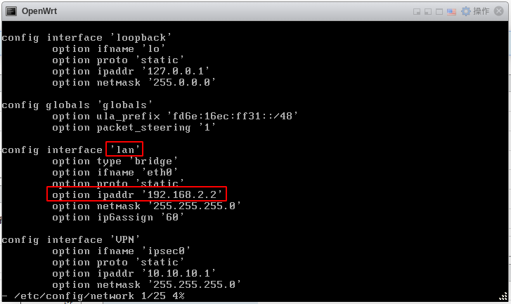
保存退出后重启虚拟机，就可以从浏览器访问 OpenWrt 的 web 控制台了：
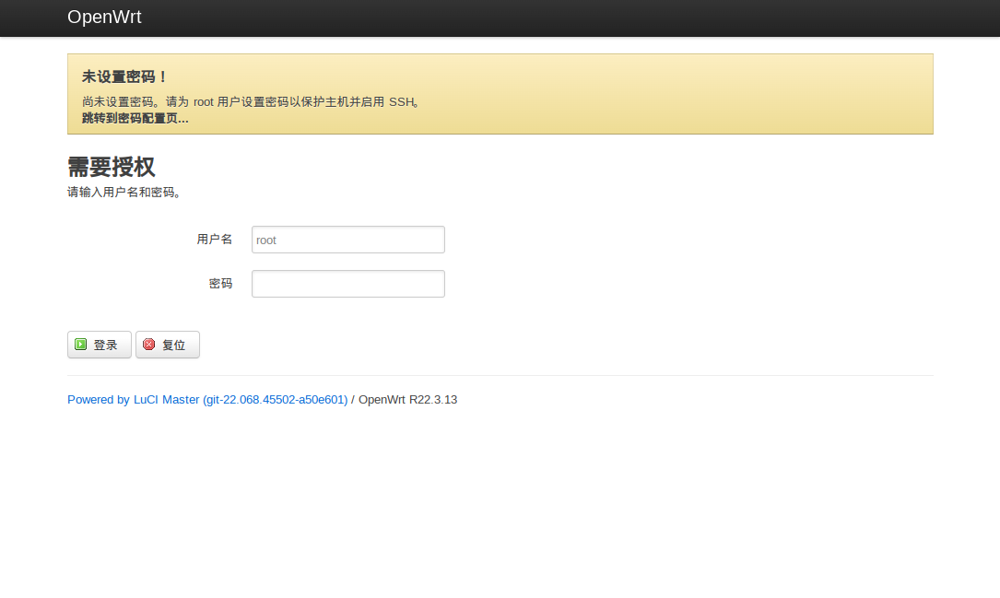
接下来是旁路由的配置，在 web 管理界面打卡 网络->接口 页面，在「基本设置」中指定 ipv4 网关、广播地址以及 DNS 服务器（DNS 服务器指定为主路由地址），因为我把所有主要设备都设置为静态 ip，所以直接在下方关闭 DHCP 服务；然后在上方选项卡切换到「物理设置」，取消接口桥接，点击保存（注意不是「保存&应用」！）
现在来到 网络->防火墙->自定义规则，在下方添加一条：
1 | iptables -t nat -I POSTROUTING -j MASQUERADE |
在下方按钮处重启防火墙，然后在网页右上角找到「未保存的配置：x」并点击，选择「保存&应用」即可，最后修改所有静态 ip 设备，将网关地址指向 OpenWrt。至此，旁路由配置暂且告一段落
实现自动拨号和网络检测
旁路由配置完成，现在回到 Windows 拨号机，准备开始实现自动拨号。在 Windows 物理机上装好拨号客户端，用 Spy++ 检查窗口，得到窗口类名和标题
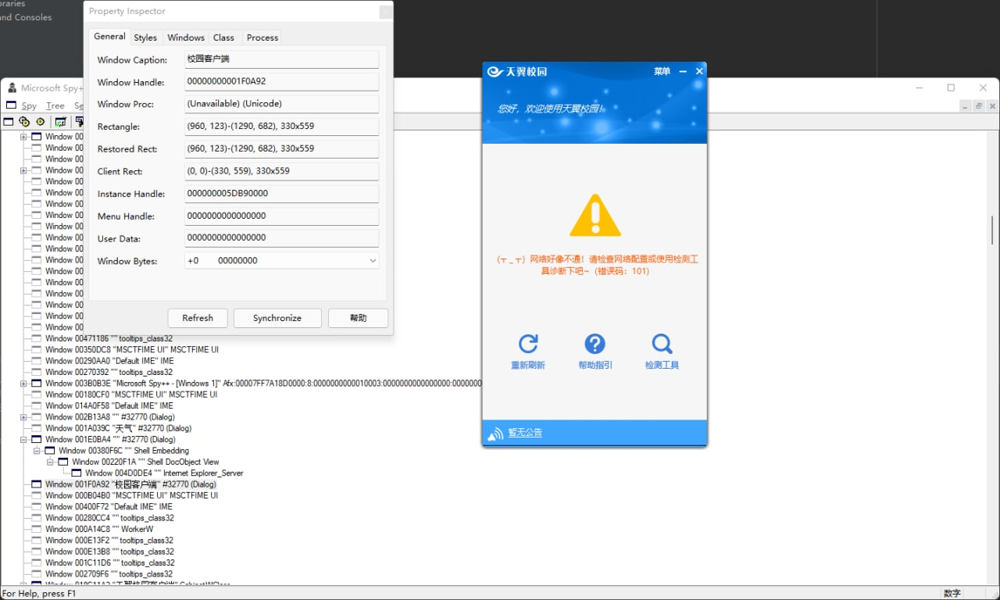
然后来搓一个小脚本，循环 GET 几大门户网站，当其中大多数均失败时，判定为网络连接不佳，自动重启客户端。因为客户端窗口大小是定死的（330 × 559），我这里直接使用像素座标进行定位：
1 | import os |
完事后记得在客户端设置中把开机自启和自动拨号都打开，然后在计划任务中配置 daemon 脚本也开机启动：
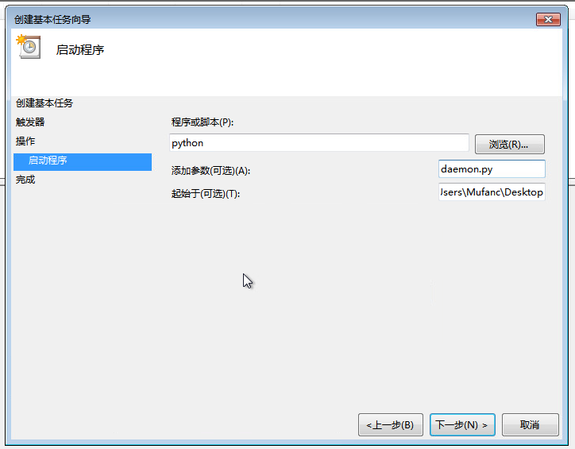
这里勾选上「以最高权限运行」：
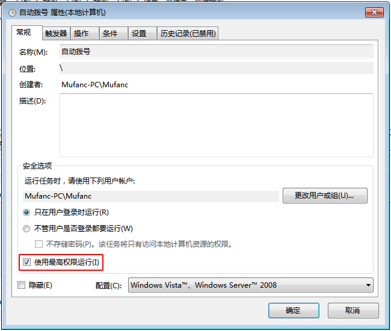
这样 Windows 虚拟机每次启动的时候脚本都会出来检测网络状态，并尝试自动拨号；由于客户端设计得不够精良，似乎存在一定程度的内存泄漏，再配置一个任务让虚拟机每隔两天使用 shutdown -r -t 0 重启一次，就大功告成啦！
一点补充
本文中对旁路由的配置仅仅停留在非常初级的阶段，其实 OpenWrt 能干的事情远远不止这些。比如可以配置 DNS 给每个内网设备分配一个专属域名，通过 DoH、DoT 等技术突破 DNS 劫持和污染等等，碍于篇幅限制，本文中就不再过多介绍，还请有兴趣的读者自己摸索探究
- 最后附上网络拓扑图